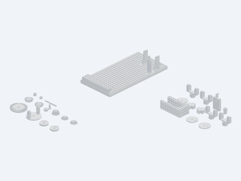
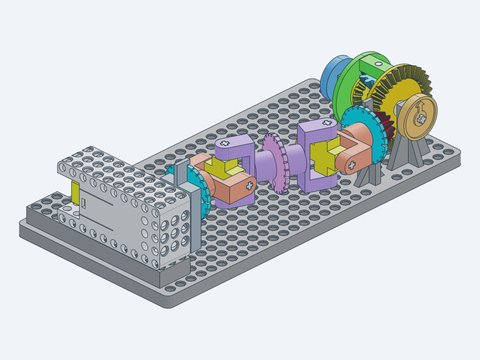

萬向接頭教學模組（TT 馬達＋雙萬向接頭＋差速器）
Double Cardan Joint Teaching Module
用來講解萬向接頭的教學模組：TT 馬達放在中線上，「開放式差速器教學模型」的小齒輪軸卻在中線右邊 23.5 mm，兩軸平行錯開，用兩個自印的放大版萬向接頭排成 Z 型接起來。中間軸、馬達軸、輸入軸上都有指針盤，可以看到中間軸忽快忽慢、輸出卻和馬達同步；把中間軸一端的叉子轉 90° 再裝，就能示範錯相時轉速波動加倍。馬達有 4 個位置可換，夾角 22.8°～40.3°。
ujoint_diff_assembly_preview
重點規格
- 偏移量
- 馬達軸與小齒輪軸平行錯開 23.5 mm
- 夾角 β
- 22.8°（置中）、29.4°、35.2°、40.3°
- 萬向接頭
- 叉子 ×4（相同）、十字軸 ×2，軸頸用 LEGO 2L 十字軸
- 差速器
- 33：11 = 3:1，沿用差速器教學模型
- 底座
- 117.6 × 229.7 mm Technic 孔板
組成零件（3 件作品）
以下零件直接沿用各自的作品；點進去可看設計說明、下載列印檔與原始碼。


為什麼要兩個萬向接頭
- 差速器原型的小齒輪軸（冠狀齒輪錐頂）在中線右邊 23.5 mm，馬達置中後兩軸平行但錯開；平行偏移要兩個萬向接頭排成 Z 型
- 單個萬向接頭不等速：ω₂/ω₁ = cos β ÷ (1 − sin²β cos²θ)，每轉快慢各兩次；β = 40.3° 時轉速在 0.76～1.31 倍之間，角度最多差 7.7°
- Z 型雙萬向：兩端夾角相等、中間軸兩端叉子在同一平面，第二個接頭把第一個的快慢反過來抵消，小齒輪和馬達完全同步
- 中間軸一端的叉子轉 90° 再裝（十字孔可以 90° 換位）：兩個接頭同時加速、同時減速，波動加倍；β = 40.3° 時輸出最多差 15°
萬向接頭（自印放大版）
- 叉子：轂（Ø16，13 mm 深的 LEGO 十字孔）＋橫板＋兩片叉耳（7.8 厚、間距 22.8），叉耳上是十字孔；4 個叉子完全相同
- 十字軸：兩支 10 × 10 方臂交叉（22 × 22 × 10），四個臂末端各有 Ø5.4 圓孔
- 軸頸用 LEGO 2L 十字軸：從叉耳外側插進十字孔（固定、和叉耳外面齊平），另一半伸進十字軸的圓孔轉動
- 叉子尾端到接頭中心 27.5 mm，十字軸臂轉到 45° 時仍離叉子橫板 0.4 mm 以上
教學輔助
- 指針盤 ×3（Ø34）：每 15° 一個刻度缺口、每 90° 一個深缺口，0° 位置開一個圓窗；套在馬達端軸、中間軸、輸入軸上
- 軸承塔頂與小齒輪塔頂各有一片指示鰭，指著馬達端與輸入端的指針盤；同相時兩個盤一直指同一個刻度，紫色中間軸盤會超前、落後
- 夾角可調：馬達、聯軸器與軸承塔一起往左移 0／8／16／24 mm，中間軸依序換 3L／3L／4L／5L（兩端各插 7～11 mm，十字孔深 13 mm）
- 手搖模式：拔掉 TT 馬達與聯軸器，把差速器模型的曲柄套在軸承塔後面伸出的 4L 軸上，慢慢轉看指針盤
傳動路徑
- TT 馬達 →（TT 軸轉 LEGO 十字孔聯軸器）→ 4L 軸穿過軸承塔 → 叉子 → 萬向接頭 J1 → 中間軸 → 萬向接頭 J2 → 叉子 → 4L 輸入軸穿過小齒輪塔 → 11 齒小齒輪 → 33 齒冠狀齒輪（3:1）→ 差速器 → 兩個車輪
- TT 馬達外框（SideTop）側躺，側面的孔用銷插在底座後方墊高 10.3 mm 的馬達床上；馬達床、軸承塔的銷孔都在同一組 8 mm 孔格上，4 個位置都對得上
檢查（build123d）
- 39 個零件靜止時兩兩檢查：沒有重疊；冠狀齒輪與小齒輪齒隙 0.10 mm，軸頸與十字軸、叉耳各 0.15～0.30 mm
- 4 個馬達位置 × 叉子同相／錯 90° 兩種，各轉半圈（每 15° 一步）：叉子、十字軸、軸頸、中間軸、指針盤互不干涉，也不碰底座、軸承塔與馬達
- 運動學：中間軸超前／落後最多 2.32°（22.8°）～7.73°（40.3°），和單一萬向接頭公式一致；同相時小齒輪與馬達角度差 0.000°，錯 90° 時最多 4.6°～15.3°
- 銷孔：4 個位置下馬達外框 30 孔、軸承塔 3 孔都對準底座；手搖曲柄轉一整圈不碰底座與軸承塔
- FreeCAD 組立圖由組裝 STEP 匯入，39 個零件依位置還原名稱與顏色
列印：ujoint_diff_plates.3mf
- ① 底座（約 11.2 小時、136 g） ② 萬向接頭：軸承塔、叉子 ×4、十字軸 ×2、指針盤 ×3、TT 馬達外框、聯軸器（約 5.0 小時、62 g） ③ 差速器零件 13 件與曲柄（約 2.0 小時、26 g）
- 合計 26 件、約 18.2 小時、223 g（Bambu Lab X2D、PLA、0.4 噴嘴估算）；Bambu Studio 命令列切片確認三盤都能切，網格 0 條開放邊
- 叉子尾端朝下立著印、十字軸平放、指針盤平放；叉耳與十字軸的孔是水平孔，靠小跨距橋接
- 不用印：TT 減速馬達、Technic 2L 摩擦銷 ×9、LEGO 十字軸（2L ×8、4L ×4、中間軸 3L，另備 4L、5L）
3D 動畫頁
- 組裝 8 步：底座 → 差速器 → 小齒輪、輸入軸與叉子 → 萬向接頭 J2 → 中間軸 → 軸承塔與馬達端叉子 → 萬向接頭 J1 → TT 馬達
- 運轉示範：選 4 個夾角、切換叉子同相／錯 90°；即時顯示馬達、中間軸、輸出的角度與角度差，並畫出中間軸與輸出的速度比曲線
- 動畫裡的萬向接頭用和建模、檢查同一套向量解（十字軸兩臂永遠互相垂直）
待實測
- LEGO 2L 十字軸當軸頸靠十字孔的摩擦固定，實印後確認轉動時會不會往外退；必要時十字孔間隙改小或外側加擋片
- 大夾角（40°）時十字軸與叉子的摩擦、手搖時的順暢度
檔案下載
| 預覽 | 類型 | 說明／下載 | 大小 |
|---|---|---|---|
 | 3MF | 全部列印零件：一個 Bambu Studio 專案，3 盤共 26 件（LEGO 標準件與 TT 馬達不含） ujoint_diff_plates.3mf | 4.9 MB |
| FCStd | FreeCAD 組立圖（39 個零件） ujoint_diff_assembly.FCStd | 1.1 MB | |
 | 檔案 | 組裝 STEP（馬達置中） ujoint_diff_assembly.step | 19.5 MB |
| PY | 零件幾何與配置：叉子、十字軸、指針盤、軸承塔、底座（build123d） uj_parts.py | 15 KB | |
| PY | 組裝與萬向接頭向量解、爆炸圖（build123d） uj_assembly.py | 10 KB | |
| PY | 分盤成 Bambu 專案的腳本 print_all.py | 13 KB | |
| PY | 干涉、轉動掃掠、運動學、銷孔、手搖曲柄檢查 check_uj.py | 5 KB | |
| PY | 產生 FreeCAD 組立圖的腳本 build_assembly.py | 3 KB |
FCStd 用 FreeCAD 1.1 開啟（參數在 Params 試算表）；3MF 可直接拖進 Bambu Studio 或其他切片軟體。